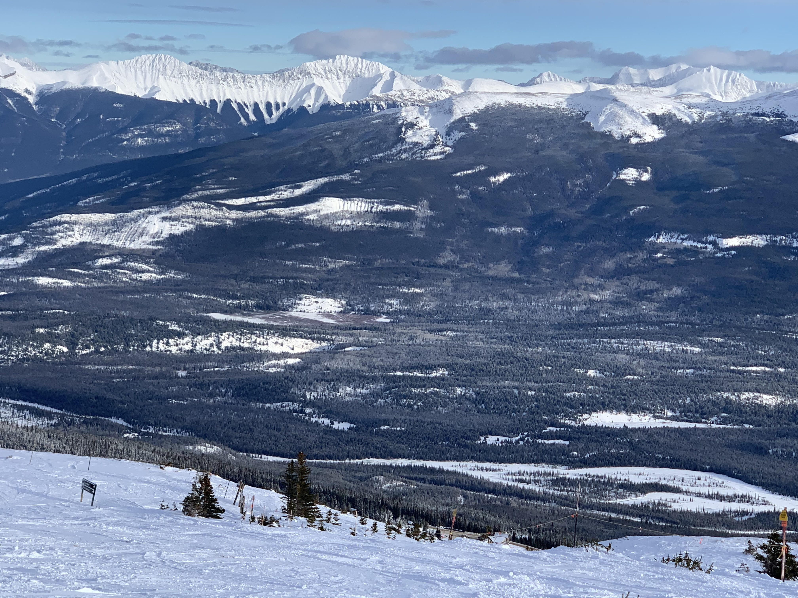
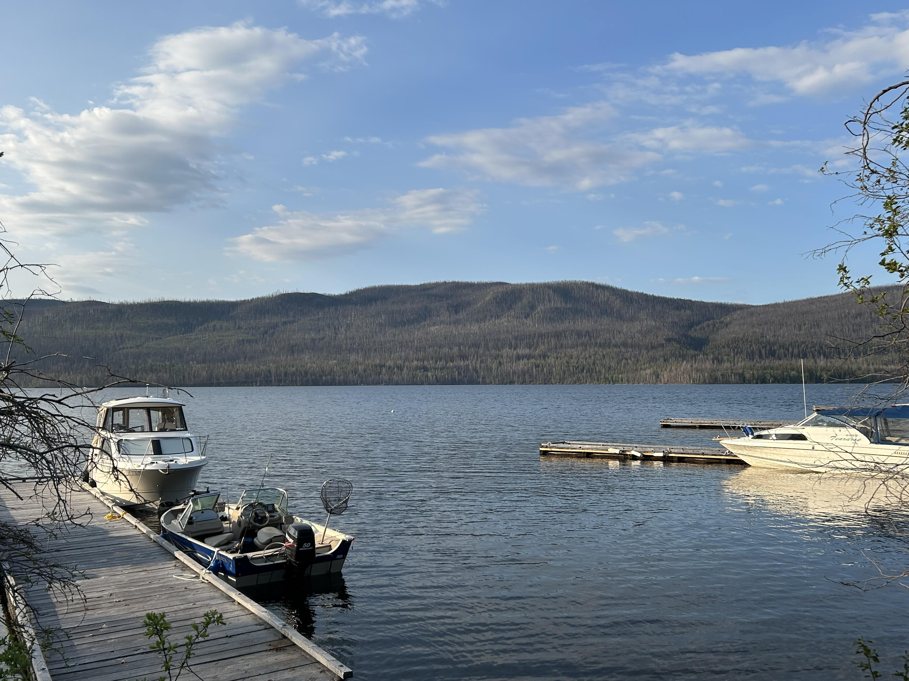
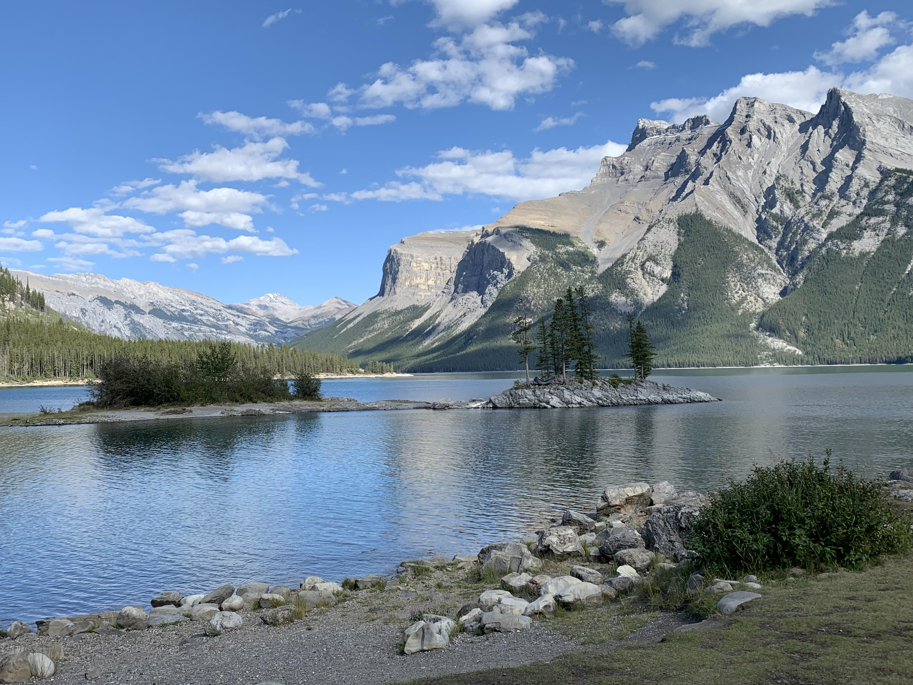

I enjoy going on ski trips. I have been skiing since I was in elementary school. This past year I went to Marmot with my brother and some of his friends for a week.
Marmot Basin Another one of my hobbies is Fishing. Last summer I went to François Lake in British Columbia with my brother.
François Lake I have been on camping trips my entire life, many of which include trips to Banff, Jasper or Golden BC.
Banff 